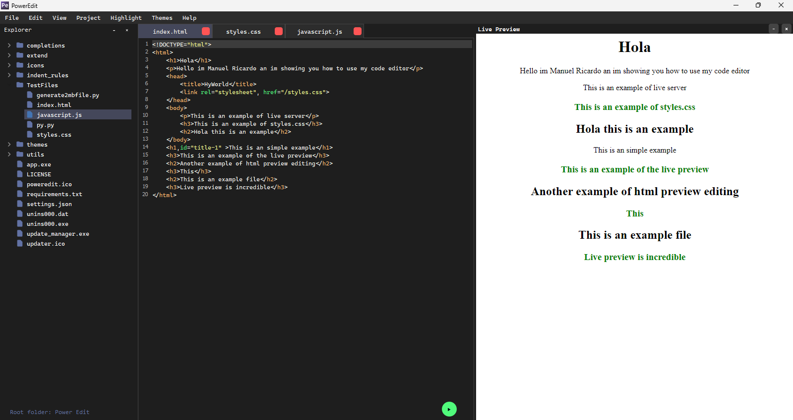
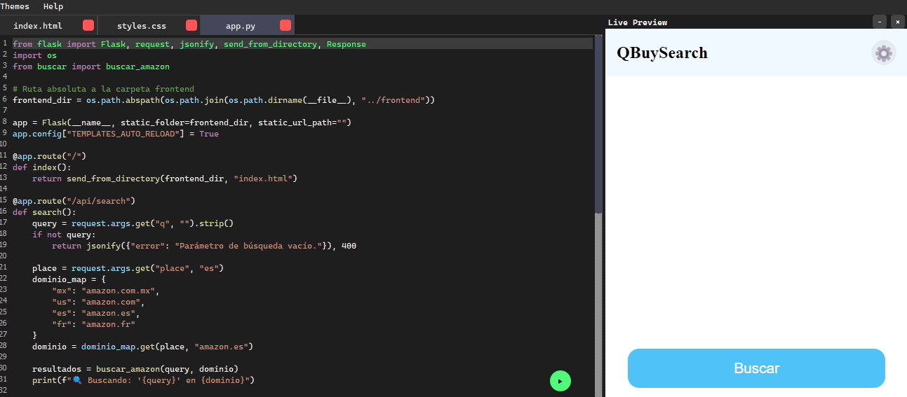
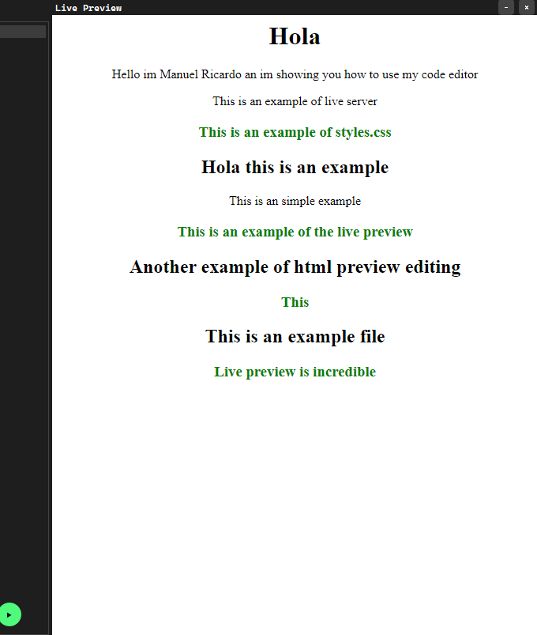

Live Preview¶
Live Preview is one of the most powerful and user-friendly features of PowerEdit. It transforms how you edit web-related code—HTML, CSS, and JavaScript—by providing an instant, interactive preview of your work without needing to save the file first.



Key Features¶
-
Instant Feedback Without Saving
Live Preview displays all code changes in real time by using an internal live cache. This means you can immediately see the effect of your edits without interrupting your workflow to save and reload. -
Support for External URLs
Beyond local files, Live Preview can load and display external URLs. This is especially useful for previewing live web apps, frameworks running on localhost servers (like Flask, Django, or Node.js), or even remote resources. -
Integration with the Console
Live Preview is tightly integrated with the PowerEdit console. When you select a URL in the console, right-clicking it will give you the option to open that URL directly in Live Preview, providing a seamless transition between debugging and viewing your project. -
Based on PyWebEngine (Chromium)
To ensure the best rendering and compatibility, Live Preview is powered by PyWebEngine, a Chromium-based engine. This means your previews look and behave very similarly to how they would in popular modern browsers like Chrome or Edge. -
Rich Context Menu
Right-clicking inside the Live Preview window reveals several useful options: - Open the current preview in an external browser for full-featured interaction.
- Load any external URL on demand without leaving the editor.
- Copy the current preview URL for sharing or debugging.
How Live Preview Enhances Your Workflow¶
With Live Preview, you no longer need to juggle between your code editor and a separate browser window. It eliminates the tedious cycle of saving, switching windows, and refreshing browsers. Instead, you see your edits instantly rendered, speeding up development and improving accuracy.
Whether you are building static websites, interactive frontends, or complex web applications with backend frameworks, Live Preview simplifies testing and iteration.
Use Cases¶
- Frontend Development: Instantly see changes in your HTML, CSS, and JS as you type.
- Web Frameworks: Seamlessly preview apps running on localhost servers, integrated with console output.
- Remote Content: Load and interact with external web pages or API UIs for testing or reference.
Future Plans¶
PowerEdit’s Live Preview feature is actively under development. Planned improvements include:
- Enhanced debugging tools, such as a JavaScript console panel inside the preview.
- Support for viewing and handling errors directly from the preview window.
- Additional context menu options for network inspection, DOM exploration, and performance profiling.
Notes¶
- Live Preview currently relies on PyWebEngine, which must be properly installed and configured in your environment.
- Some complex web apps with advanced security policies (CORS, CSP) may have limitations inside the preview.